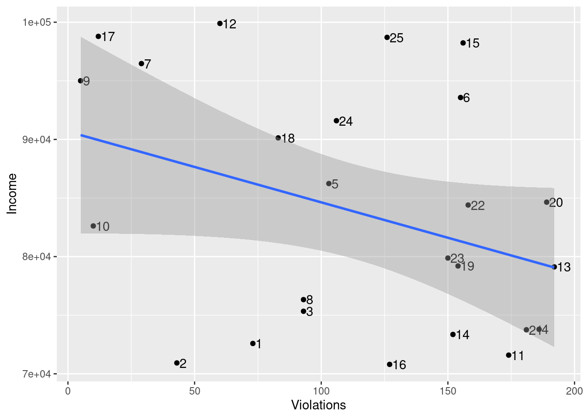

#### Preamble ####
# Purpose: Simulates Fire Inspection Results
# Author: Jessica Im
# Date: 20 January 2024
# Contact: jessica.im@mail.utoronto.ca
# Pre-requisites: None
# Data:
## Fire Inspection Data: https://open.toronto.ca/dataset/highrise-residential-fire-inspection-results/
## Ward Data: https://open.toronto.ca/dataset/ward-profiles-25-ward-model/
# Download "2023-WardProfiles-2011-2021-CensusData" data filescripts/00-simulate_data.R
#### Workspace setup ####
library(opendatatoronto)
library(dplyr)
Attaching package: 'dplyr'The following objects are masked from 'package:stats':
filter, lagThe following objects are masked from 'package:base':
intersect, setdiff, setequal, unionlibrary(tidyverse)── Attaching core tidyverse packages ──────────────────────── tidyverse 2.0.0 ──
✔ forcats 1.0.0 ✔ readr 2.1.5
✔ ggplot2 3.4.4 ✔ stringr 1.5.1
✔ lubridate 1.9.3 ✔ tibble 3.2.1
✔ purrr 1.0.2 ✔ tidyr 1.3.0── Conflicts ────────────────────────────────────────── tidyverse_conflicts() ──
✖ dplyr::filter() masks stats::filter()
✖ dplyr::lag() masks stats::lag()
ℹ Use the conflicted package (<http://conflicted.r-lib.org/>) to force all conflicts to become errorslibrary(knitr)
library(janitor)
Attaching package: 'janitor'
The following objects are masked from 'package:stats':
chisq.test, fisher.testlibrary(ggplot2)#### Simulate Fire Inspection Violations per Ward ####
#based on code from: https://tellingstorieswithdata.com/02-drinking_from_a_fire_hose.html#simulate and https://tellingstorieswithdata.com/02-drinking_from_a_fire_hose.html#simulate-1
set.seed(250)
simulated_data <-
tibble(
# Use 1 through to 25 to represent each ward
"Ward" = 1:25,
# Randomly pick an option, with replacement, 25 times
"Avg Num of Violations per Highrise" = sample(
x = c("<10", "10 to 20", ">20"),
size = 25,
replace = TRUE
),
"Total Num of Violations" =
sample(100:500, 25, replace = TRUE),
"Num of Highrises w/ Violations" =
sample(0:200, 25, replace = TRUE),
"Highrises" =
sample(0:150, 25, replace = TRUE),
)
simulated_data# A tibble: 25 × 5
Ward Avg Num of Violations p…¹ Total Num of Violati…² Num of Highrises w/ …³
<int> <chr> <int> <int>
1 1 10 to 20 308 179
2 2 >20 280 96
3 3 10 to 20 169 113
4 4 10 to 20 200 136
5 5 10 to 20 449 148
6 6 10 to 20 185 17
7 7 <10 274 55
8 8 10 to 20 310 70
9 9 <10 352 149
10 10 10 to 20 321 50
# ℹ 15 more rows
# ℹ abbreviated names: ¹`Avg Num of Violations per Highrise`,
# ²`Total Num of Violations`, ³`Num of Highrises w/ Violations`
# ℹ 1 more variable: Highrises <int>#### Simulate Household Income ####
set.seed(250)
simulate_data <-
tibble(
# Use 1 through to 25 to represent each ward
"Ward" = 1:25,
# Randomly pick an option, with replacement, 25 times
"Median Income Household" =
sample(70000:100000, 25, replace = TRUE),
"Median Income Individual" =
sample(30000:60000, 25, replace = TRUE),
)
simulate_data# A tibble: 25 × 3
Ward `Median Income Household` `Median Income Individual`
<int> <int> <int>
1 1 87393 58934
2 2 88290 53235
3 3 81081 57211
4 4 92457 30587
5 5 89657 50130
6 6 91353 37568
7 7 79212 43579
8 8 70017 48539
9 9 91431 40420
10 10 93384 37237
# ℹ 15 more rows#### Simulate Income x Fire Inspection Violations ####
set.seed(250)
simulated_data_x <-
tibble(
# Use 1 through to 25 to represent each ward
"Ward" = 1:25,
# Randomly pick an option, with replacement, 25 times
"Avg Num of Violations per Highrise" = sample(
x = c("<10", "10 to 20", ">20"),
size = 25,
replace = TRUE
),
"Num of Highrises w/ Violations" =
sample(0:200, 25, replace = TRUE),
"Highrises" =
sample(0:150, 25, replace = TRUE),
"Median Income Household" =
sample(70000:100000, 25, replace = TRUE),
"Median Income Individual" =
sample(30000:60000, 25, replace = TRUE),
)
simulated_data_x# A tibble: 25 × 6
Ward `Avg Num of Violations per Highrise` Num of Highrises w/ Vi…¹ Highrises
<int> <chr> <int> <int>
1 1 10 to 20 180 96
2 2 >20 69 17
3 3 10 to 20 100 54
4 4 10 to 20 93 11
5 5 10 to 20 85 10
6 6 10 to 20 174 109
7 7 <10 15 40
8 8 10 to 20 90 99
9 9 <10 95 67
10 10 10 to 20 169 117
# ℹ 15 more rows
# ℹ abbreviated name: ¹`Num of Highrises w/ Violations`
# ℹ 2 more variables: `Median Income Household` <int>,
# `Median Income Individual` <int>#### Graph Household Income x Num of Highrises w/ Violations ####
# Create data
Ward = 1:25
Violations = sample(0:200, 25, replace = TRUE)
Income = sample(70000:100000, 25, replace = TRUE)
data <-
data.frame("Ward" = Ward, "Num of Highrises w/ Violations" = Violations, "Median Income Household" = Income)
data Ward Num.of.Highrises.w..Violations Median.Income.Household
1 1 73 72588
2 2 43 70927
3 3 93 75337
4 4 186 73798
5 5 103 86234
6 6 155 93574
7 7 29 96471
8 8 93 76330
9 9 5 95005
10 10 10 82616
11 11 174 71593
12 12 60 99897
13 13 192 79123
14 14 152 73357
15 15 156 98234
16 16 127 70803
17 17 12 98792
18 18 83 90130
19 19 154 79200
20 20 189 84646
21 21 181 73759
22 22 158 84402
23 23 150 79876
24 24 106 91597
25 25 126 98707# Create Scatterplot
# Based on code from: http://www.sthda.com/english/wiki/ggplot2-scatter-plots-quick-start-guide-r-software-and-data-visualization and https://ggplot2.tidyverse.org/reference/geom_text.html
ggplot(data, aes(x=Violations, y=Income)) +
geom_point() +
geom_text(label=rownames(data), hjust = 0, nudge_x = 1) +
geom_smooth(method=lm)`geom_smooth()` using formula = 'y ~ x'
#### Validating Data ####
# Test 1: 1 to 25 wards
# Based on: https://tellingstorieswithdata.com/02-drinking_from_a_fire_hose.html
simulate_data$Ward |> min() == 1[1] TRUEsimulate_data$Ward |> max() == 25[1] TRUE# Test 2: Max 25 wards
# Based on code in: https://github.com/InessaDeAngelis/Toronto_Elections/blob/main/scripts/00-simulate_data.R
simulate_data |>
group_by(Ward) |>
count() |>
filter(n > Ward) |>
sum() == 0[1] TRUE# Test 3: There are between 0 to 150 Highrises
simulated_data$Highrises |> min() >= 0[1] TRUEsimulated_data$Highrises |> max() <= 150[1] TRUE# Test 4: Median Income for Individuals is between 30,000 and 60,000
simulated_data_x$"Median Income Individual" |> max() >= 30000[1] TRUEsimulated_data_x$"Median Income Individual" |> min() <= 60000[1] TRUE